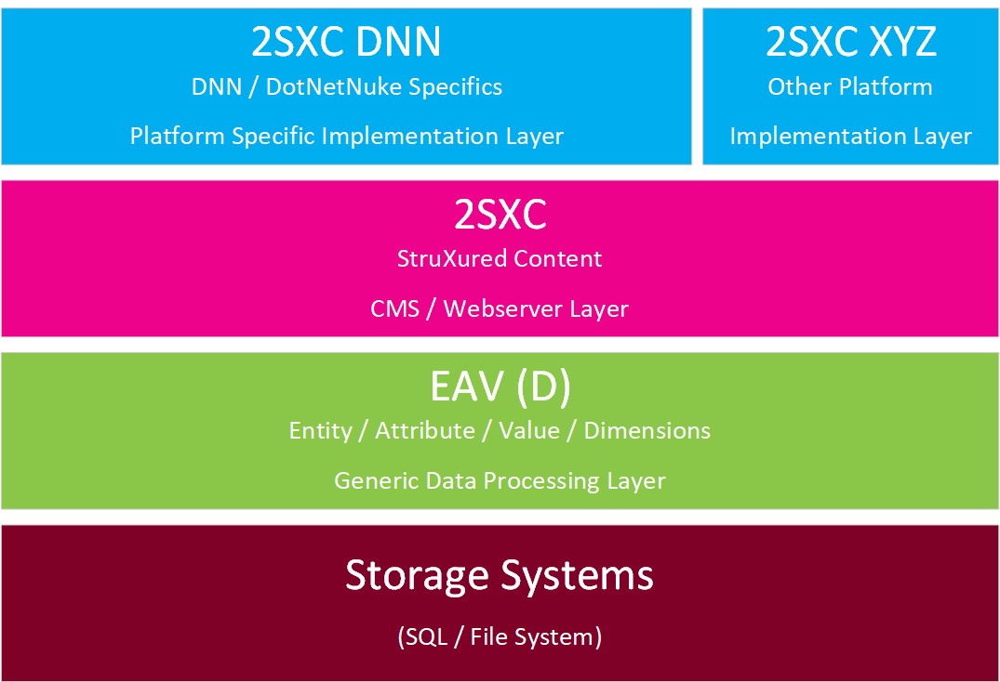
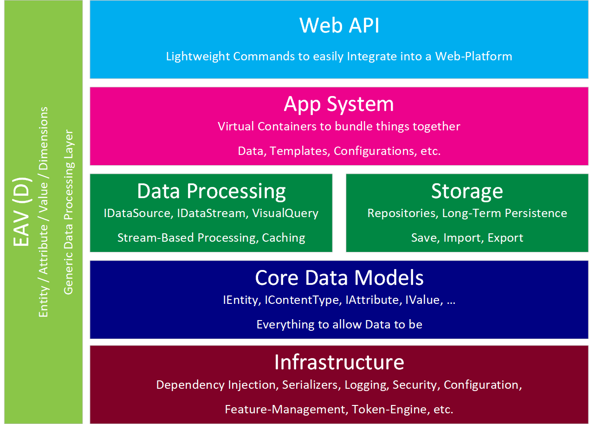

EAV / 2sxc / Dnn Architecture
2sxc is simple to use, but to enable that, it's pretty sophisticated on the inside. We'll give you an overview here, so you can better understand what you are using.
Overall Architecture
The Storage Systems
This is fairly straight forward - data can be stored in SQL (spread across tables or using JSON) and the File System (stored as JSON). Note that assets like images are not handled here, but in the EAV-Apps layer (see below).
The EAV Layer
The data management system underneath everything is called the EAV - which stands for Entity, Attribute, Value. Anything in that namespace is about internal data models, reading/saving data etc. So anything inside the ToSic.Eav.Data is all about the internals, which you only need in special scenarios. The same applies to ToSic.Eav.Apps which is the sub-system responsible for combining data into virtual bundles called Apps. You can usually ignore this.
The SXC Layer
On top of the EAV layer we have the Sxc layer.
It's responsible for Content Management on top of the App model provided by the EAV.
The Sxc layer provides things like IDynamicEntity to let you code like @Content.Title.
This is usually more interesting for you, but still fairly generic, because 2sxc is also meant to work with other
platforms like NopCommerce, Orchard or Oqtane, but it hasn't been implemented yet.
The Dnn Layer
On top of the Sxc layer we have the Dnn layer. It connects 2sxc with Dnn. Usually when you're writing code and want to know about the API, you'll typically start here, and drill down to the other APIs as needed.
Architecture of the EAV Layer
Inside the EAV you'll find a whole ecosystem of parts which make the magic happen.
Infrastructure
This is very internal stuff, to make sure everything happens. You will usually not go here. Most if it is also not public API. Areas of interest may be the ToSic.Lib.Logging or ToSic.Eav.LookUp.
Core Data Models
This is more interesting and relevant to you, when you want to dive deep into the data model. Again you should note that this is advanced stuff. You'll find it in ToSic.Eav.Data - the most common bit you may care about is IEntity and IContentType.
Data Processing
This is where things get relevant for you. Check out the ToSic.Eav.DataSources to find all the bits and pieces used to process, filter and cache data.
Storage
This is still more an internal bit, and as of now you shouldn't use it.
App System and Assets
Another part that you may want to know more about. Here is where data is clustered together into virtual containers called Apps. These contain all the content-types and items of an App. It also has view-definitions, Content-Blocks (the logical unit usually called a Module in Dnn) and way more. You'll find it in ToSic.Eav.Apps.
The assets - usually using ADAM - are found in ToSic.Eav.Apps.Assets.
Web API
This is ATM an internal section, mainly for connecting Dnn WebAPIs to the EAV. Not documented as of now.
The Fine Line Between Eav.Apps and Sxc.*
To keep the architecture clean, it's important to draw a clear line between Apps and what Sxc does. Basically it's this:
- Eav.Apps are virtual containers bundling things together. This means content-types, data, queries, settings, etc.
- Sxc is all about (Web) Content Management. So anything related to views, templates, assets, content-blocks is in Sxc.
Specifically, these things may not be in Apps, and must be in Sxc
- Templates
- Rendering Engines like Token/Razor
- Content-Blocks
- Custom WebApi (which is also kind of a dynamic rendering engine)